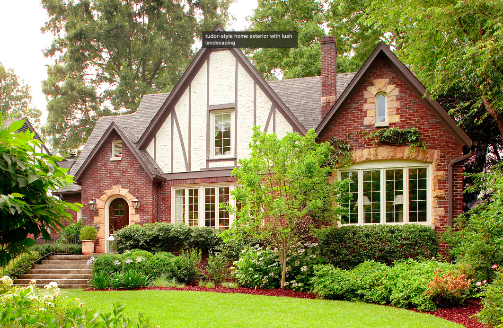
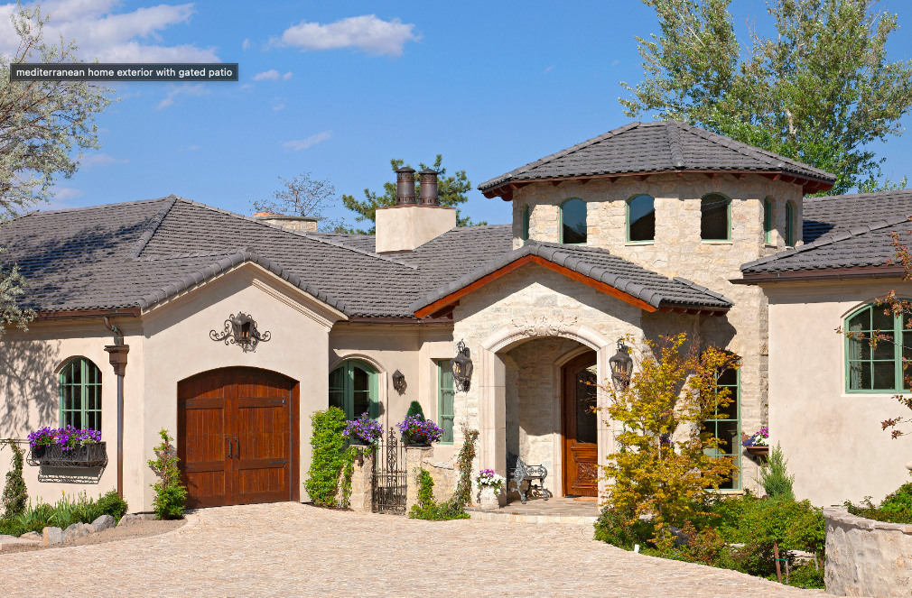
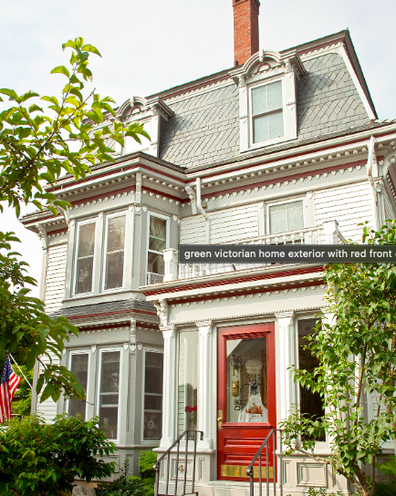

- French Country House
- Tudor House
- Mediterranean House
- Victorian House

Country French-style homes in the United States date back to the
18th century. At that time, France occupied much of eastern
North America, with settlements scattered along the principal
waterways, such as the St. Lawrence, Great Lakes, and
Mississippi valleys. French building traditions started to fade
after President Thomas Jefferson purchased Louisiana in 1803,
but this house style remained popular in New Orleans and other
areas for another half-century.

This style's name suggests a close connection to the
16th-century architecture of England's Tudor dynasty. But the
Tudor houses we see today are modern-day reinventions loosely
based on a variety of Late Medieval English prototypes.

Mediterranean-style architecture gave birth to the Spanish
Colonial Revival style that flourished in Southern California
during the 1920s and 1930s following a noteworthy appearance at
the Panama-California Exposition of 1915.

There are several styles of houses (such as Queen Anne) that
fall within the Victorian era, which lasted from 1837 to
1901.Homes of the Victorian Era had interiors that were
romantic, distinctive, and abundant in detail, from the patterns
of their fabrics to their colors and textures.